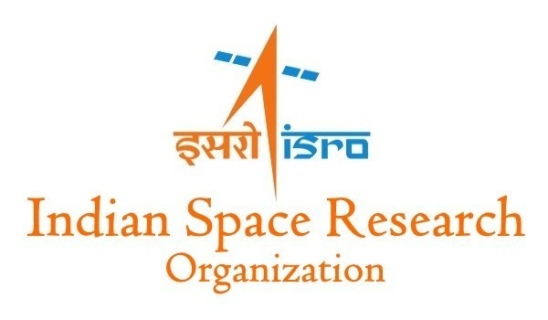

Indian Space Research Organisation (ISRO)
The Indian Space Research Organisation (ISRO) is India's national space agency, operating under the Department of Space of the Government of India. It is headquartered in Bengaluru and is responsible for the development of space technology and its application for national development.
Overview
ISRO conducts satellite launches, planetary exploration, Earth observation, and space science missions. The organisation is known for its cost-effective and reliable space missions and plays a key role in advancing India's technological capabilities in space.
Launch Vehicles
- PSLV: Polar Satellite Launch Vehicle used mainly for Earth observation and scientific satellites
- GSLV: Geosynchronous Satellite Launch Vehicle designed for heavier communication satellites
- LVM3 (Gaganyaan): Heavy-lift launch vehicle developed for human spaceflight missions
Mission Portfolio
ISRO has carried out numerous landmark missions, including the Chandrayaan lunar missions, the Mars Orbiter Mission (Mangalyaan), and the deployment of navigation and communication satellites. The organisation also supports disaster management, weather forecasting, and national security applications.
Future Direction
ISRO is focused on human spaceflight through the Gaganyaan program, advanced planetary exploration, and the development of next generation launch systems. The agency is also expanding commercial launch services and international cooperation.